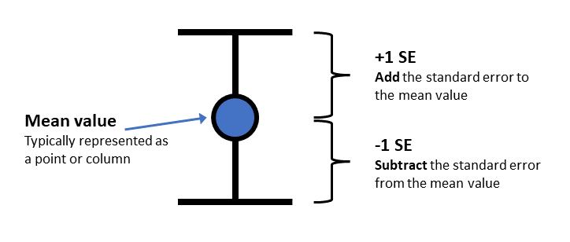

8 Week 8: Plotting means, SEs and related-samples t-tests
Written by Tom Beesley & John Towse
Today we will take a look at summarising means and standard errors (SEs) from our data. We will look at how we plot these together on the one graph (using ggplot() commands that allow us to share mappings between different geoms0. We will explore our data on the famous “Stroop Task” and we will use a related-samples t-test to examine the differences between the means of our different conditions in this task.
8.1 Pre-lab work: online tutorial
Online tutorial: You must make every attempt to complete this before the lab! To access the pre-lab tutorial click here (on campus, or VPN required)
Getting ready for the lab class
Create a folder and a Project for Week 8. Click here for the instructions from Week 6 if you are unsure.
Download the Week_8.zip file and upload it into this new folder in RStudio Server. If you need them, here are the instructions from Week 2.
8.2 RStudio Task 1: Calculating means and SEs
The “Stroop Effect” is a classic demonstration of automaticity of behaviour. Participants have to say the colour a word is printed in, which is an easy task for a “compatible” stimulus like GREEN, and a much more difficult task for an “incompatible” stimulus like BLUE. We can’t help but read the text - it has seemingly become an automatic process.
 In this task we will calculate the means and standard errors of the means. We will then plot them using
ggplot().
In this task we will calculate the means and standard errors of the means. We will then plot them using
ggplot().
Open the script “Week_8_script.R” (see prep work)
Run the
libraryandread_csvlines of code. You should see an object in the environment called data_w8View the data with view(data). You will see that the data are a little different from the data we have worked with previously. We have an pID variable, which gives a unique number for each person. Each person has 3 rows. This is because the different conditions of the Stroop task reflect a within-subjects variable (related samples). For data like this it is often useful to have them arranged in what is referred to as “long format”, with multiple rows for each response the participant provides. For the current data that means we have a variable called condition, which is our IV, and one called time which is our DV.
Let’s look at the distribution of time (our DV) as a function of condition. Complete the next chunk of code by mapping x to time and fill to condition for our
geom_density()plot. As per last week, you will want to set the alpha parameter to something between 0 and 1 - note that this is done OUTSIDE of theaes()command.We seem to have some outlier values at both the high and the low ends. It’s probably best if we remove data for the whole participant if their average time is unusual. To do that, we’ll need to create a new column (remember
mutate()?) to give us these average time values for each participant. Run the next block of code (you don’t need to edit this one) to create the new column, then run the next line toview()it.Edit the
geom_histogram()command to plot the values of the avg_time column.We now need the filter out the values in our data that we feel are unusual. Like last week, we will do this in a fairly unprincipled manner, by “eyeballing” the data (next week we’ll consider something a bit more “scientific”). Complete the filter command so that it removes both the very low values in the avg_time column, and also those that are very high. Because you want to filter out low AND high values, you are using an AND expression (&). You will therefore need to enter in two numerical values, based on your assessment of the histogram produced for Q6. Note that the filtered data is stored as a new object: data_w8_f (“f”, for “filtered”).
8.4 RStudio Task 3: Plotting the means and SEs
In Task 2 you calculated the means for each condition in the Stroop task. We’ve seen in lectures that “standard error” provides an estimate of how variable that mean will be across the samples we collect. In the online tutorial you were shown the code for creating the SE. Complete the code to add in the relevant variables to calculate both means and SEs. The code from Task 2-Q1 will give the mean; you simply need to add the correct variable (DV) to the
sd()command to calculate the SE values (note that you don’t need to put anything inn(), as this simply calculates how many rows there are).View the new object data_w8_summary. Check that the means and SEs are different for the 3 conditions. If they are the same, you probably summarised the wrong column!
Now complete the ggplot command to first plot our DV, the stroop_mean (y), as a function of the IV, condition (x).
Now we need to add some “error bars” which provide a visual guide as to how much variance there is in our data (or how much uncertainty we have in our mean value). This figure illustrates how we would typically present error bars with mean values.

- Edit the code for the
ggplot()command that plots bothgeom_col()andgeom_errorbar. You will need to calculate ayminand aymaxvalue. Use the illustration above to work out how to combine the mean value and the SE value to create the rightyminandymax.
EXTRA: These next steps can be completed to practice customising your plot
Add a
labs()layer to the plot to change the axis titles, and the title of the plot.Change the theme of the plot (e.g.,
theme_void())Map the fill aesthetic to the variable stroop_condition. You can do this for
geom_colorgeom_errorbaror both at once by putting it in theaes()within theggplot()command.Manually change the colours of the columns with using
scale_fill_manual(). Take a look at the Week 7 instructions on how to do this.
8.5 Saving your work
Scripts: By now you are hopefully getting used to editing and working within the script (if not, see the video on working in the script vs. console on Moodle). To save a script, you simply click the save icon, or press ctrl+S (cmd+s on a mac).
Plots: To save a graph you have produced, click the “Export” button in the plot window, then “Save as Image”. You can resize the graph and give it an appropriate filename. If you’ve set the working directory correctly, then the new file should appear in the current folder.
Data: The data objects you create (in the Environment) will be saved automatically if you have created a project. However, this data only exists within RStudio. What if you want to use the data elsewhere? For example you may want to share the data with a project supervisor. To do this, we need to write the data to a csv file (like those we use to import the data). You can do this with the following command: write_csv(the_data_object, "the_filename.csv")
Exporting from RStudio: The above save operations save files to a folder within RStudio Server. At some stage you will need to get these files out of RStudio Server, for example if you need a graph for your report, or you need to share the data or the scripts. To do this, simply select the files you want in the Files pane, click “More” and then “Export”. Selecting multiple files will produce a “.zip” file, which will need to be “unzipped” on your computer to access the individual files (instructions for Windows and instructions for Mac)